记白球数和黑球数。现实问题中有如下几种情况。一种情况是，知道黑、白两种球个数之和
记白球数和黑球数。现实问题中有如下几种情况。一种情况是，知道黑、白两种球个数之和 1.2 大数定律
让我们再回到最初讨论的那个“盒中抽球”的模型。盒中有 10 个球，7 黑 3 白。我们说“随意抽出一个球，得白球的概率为 0.3”，这是从取得白球的机会大小的角度看。其实，它不过是白球在全部球中所占的比率而已。
比率是一个极普通但是又极常用而重要的概念，在科技、生产和经济、社会乃至日常生活中，几乎是无所不在的。我们说对一个情况有数量上的掌握，往往就是指对有关比率有较确切的了解。比如说“某厂产品的合格率很高”，高到什么程度？还是不清楚，远不如给出一个具体的合格品率更说明问题。要考察一国或一地区的文盲情况，首要的指标是文盲率——文盲数目占全部人口数目的比率。当然还有文盲的年龄、地域和性别等方面的分布问题，但比率能给出一个总的概念。
因此，在现实生活中，有许多努力就花在搞清楚形形色色的比率上，在许多情况下这是一个需要花费大量人力、物力和时间的工作。如果从理论角度看，则不过是一个“盒子里有两种颜色的球”的模型。例如，对于某工厂的产品，白球代表不合格品而黑球代表合格品；对于文盲率问题，白球代表文盲而黑球代表非文盲，等等。无论问题的实际情况是何等复杂，若问题只涉及比率，就不影响这个模型的代表性。
这里我们看到数学这门学科的本质所在。对数学不大了解的人，容易把它看成一种高深玄妙、脱离实际的东西。的确，数学里研究的形形色色的模型、运算、关系等，都是高度抽象的。但这种抽象根植于现实，并非凭空的想象。所谓模型，不过是把一大类本质一样但外表各异的问题，表述成一种规格化的模式而已，它虽是一种抽象，但有丰富的实际内涵，盒子模型就是一个极好的例子。把这个模型有关的理论和方法研究清楚了，就可以用于像合格品率、文盲率等一切关于比率的问题。其实，数字本身就是一种高度的抽象。例如，“3”这个符号本身不能传达什么意义，必须是“3本书”“3 头牛”等与具体事物结合才产生意义，但这一抽象极有用处，这是大家都容易理解的。
把比率问题归结于盒子模型，问题就表述成：一个盒子中放了若干个黑白两种颜色的球，要搞清楚（或者说估计）白球在其中占多大的比率。不妨以 和 记白球数和黑球数。现实问题中有如下几种情况。一种情况是，知道黑、白两种球个数之和
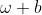
。如文盲率问题， 代表一国或地区的人口总数，这往往有较可靠的统计资料。另一种情况是， 和 知其一而不知其和。此时，模型的目的也正在于估计这个和，下述所谓的“捉—放—捉”试验，就是一个很好的例子。有一个湖，其中有某种鱼，但不知总数  是多少。为估计这个数目，从湖中捉上来该种鱼若干条，数目记为 。在这 条鱼上标上记号再放回湖中，等待相当长一段时间，以便使鱼能随机地在湖中散开（这相当于把盒中的球充分扰乱），然后从湖中捞起
是多少。为估计这个数目，从湖中捉上来该种鱼若干条，数目记为 。在这 条鱼上标上记号再放回湖中，等待相当长一段时间，以便使鱼能随机地在湖中散开（这相当于把盒中的球充分扰乱），然后从湖中捞起  条这种鱼，计数出其中有记号的有
条这种鱼，计数出其中有记号的有  条。利用已知的数 、 和 ，就可以对总数 做一个估计，方法如下：
条。利用已知的数 、 和 ，就可以对总数 做一个估计，方法如下：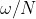
代表整个湖中该种鱼上有记号者的比率，而 代表捞起的那些鱼中有记号者的比率。近似地视二者为相等，即
代表捞起的那些鱼中有记号者的比率。近似地视二者为相等，即 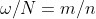
，得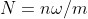
。当然，这只是一种近似的估计而非严格相等。 愈大，误差一般就愈小。最后一种情况是， 和 这两个数都不知道。例如，想要估计在某个国家或地区的吸毒者中，受艾滋病病毒感染者的比率。但是，不论是这 3 种情况的哪一种，作为估计白球比率
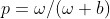
的问题，其处理方法上没有多大差别（当知道总数 时，有某种方便之处，但与目前我们这里的讨论无关），故在下面可以不管这一点。
我们的问题是要估计  。如果真是“盒子里放球”的情形，那么问题就很简单：把盒中的球倒出来，查点出黑、白球各有多少就成。但实际问题中往往不容许这样做。如估计湖中有多少鱼，要这样做得排干湖水。又如估计文盲率，这样做相当于逐一检查全国人口，来查点出何人是文盲、何人不是，这样大规模的工作不一定可行。在估计工厂产品的合格品率时，对产品的检验可能是破坏性的，更不可能逐个进行检查。
。如果真是“盒子里放球”的情形，那么问题就很简单：把盒中的球倒出来，查点出黑、白球各有多少就成。但实际问题中往往不容许这样做。如估计湖中有多少鱼，要这样做得排干湖水。又如估计文盲率，这样做相当于逐一检查全国人口，来查点出何人是文盲、何人不是，这样大规模的工作不一定可行。在估计工厂产品的合格品率时，对产品的检验可能是破坏性的，更不可能逐个进行检查。
所以，我们只能检查盒中的一部分球，且一般只是很小的一部分。但要记住，在现实问题中，球的总数 一般是极大的（要不是这样就可以用普査的方法，即对盒中的球进行逐一检视的方法），故其很小的一部分仍可能是一个很大的数目。假定我们打算检视盒中的 个球。不妨设想球是一个一个地被抽出，共抽 次。这造成了一种复杂的情况，即盒中的球数在不断变化。对于这一点，我们在前面讨论 10 个人分 3 张音乐会票的问题时就曾指出过。为了简化问题，我们把球检视后仍放回去，以使在每一次抽球时，盒里总是保持 个球。如果 很大而 与之相比很小，则这个放回对结果不会有多大影响，因为一个球被重复抽到的可能性极低。但这样做在理论上有一个很大的好处，即各次抽球成为一个完全同一的试验的重复。“完全同一”表示：每次抽球时条件完全一样，即从有 个球的盒中随机抽出一个来。“把完全同样的试验重复若干次”，在概率论中是一个极其重要的模型。由于它最初由伯努利所研究，故通称为伯努利模型（伯努利及其著作在后文中有介绍）。在此，我们又注意到数学的一个特点：数学中研究的种种模型，往往包含了对现实情况的简化。这是因为，数学方法的力量毕竟是有限的，对付过于复杂的现实问题往往无能为力。只要这种简化不与现实距离过远，或者说，所造成的误差不至于对结论的有用性造成较大的伤害，基于简化模型而发展的数学方法仍有其实用价值。
回到估计白球比率
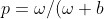
) 的问题。按上述有放回地逐一从盒中抽出 个球（每次抽出后，记下其颜色，再放回盒中，扰乱后重抽），记录白球出现次数为 ，比值 称为在这 次试验（抽取）中白球出现的“频率”。我们在直观上容易相信：至少在 比较大的时候，这个频率 应当与 比较接近，因而可以拿它作为未知的 的一个估计。从“等可能性”含义的分析上看，我们有理由相信这一点：考虑 3 白球 7 黑球的情况，把 10 个球编号为 1 至 10，其中 3 个白球编号为 1, 2, 3。设想抽了 1000 次，由于每号球之被抽出有同等可能，它应该反映在这一点上：在这 1000 次抽取中，各号球被抽到的次数应大致差不多。因为，如果差别过大，则说明某些球比另一些球被抽到的机会大得多，这有悖于“机会均等”的含义——自然，由于偶然性的作用，小的差别会有。这样，大体上每号球有 100 次左右的机会被抽到。因此，在这 1000 次抽取中，白球（1, 2, 3 号）出现的次数 大体上在 300 左右，二者的比大约为 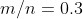
，而 0.3 正是盒中白球的比率。当然，以上的讨论不能算作严格的论证。学过平面几何的读者知道，在数学上对论证的要求很严格。为证明一个几何定理，例如三角形的三条高相交于一点，要经过多步推导，每一步都要有严格的依据，一丝不苟。而在我们上述论证中，“大体上”“左右”“大约”这些含糊的字眼多次出现，这够不上数学论证的标准。
在历史上，第一个企图对“当试验次数 愈来愈大时，频率 会愈来愈接近比率 ”这个论断给予严格的意义和数学证明的，是早期概率论历史上最重要的学者雅各布·伯努利（1654—1705）。他出生于瑞士的巴塞尔，在他的家族中，有五六位成员曾在数学和概率论领域中做出过重要贡献，雅各布是其中最负盛名的。他的贡献中，最重要的、对后世起了最大影响的，就是刚才提到的“频率接近比率”这个论断的数学证明。说来有趣的是，他之所以研究这个问题，并非因为他对这个论断之真伪存在疑问。如他自己在著作中所说，甚至那些最愚笨的人，出于其自然的天性而无须他人指点，也会相信这一点。因为这个论断得到如此广泛的公认，它理应有其理论上的根据所在，他的目标就是找出这个根据。
除了这个问题以外，伯努利还对现代高等数学的基础——微积分的发展起了重要的作用。他生活的那段时期正值牛顿和莱布尼茨发明了微积分。伯努利与莱布尼茨有着良好的个人关系，他通过与莱布尼茨的通信，与后者探讨微积分研究中的问题。有的学者认为，他当时对这个重要领域的贡献，是牛、莱以下的第一人。
在现代，学者们进行学术交流的方式很多。交通和通信的进步，使个人接触和会议交流变得很方便，还有众多的期刊与专业著作等。在伯努利时代则不同，当时学术交流的主要手段，是学者之间的个人通信。就伯努利而言，他在概率论方面的研究，得益于与惠更斯的联系。惠更斯（1629—1695）是欧洲当时最著名的概率论学者，他在 1657 年出版的著作《机遇的规律》，是卡尔达诺《机遇博弈》之后最有影响力的概率论著作，曾在长达 50 年的时间内成为这门学科的标准教科书。伯努利与惠更斯长期保持通信联系，他仔细研究过惠更斯的上述著作，并为这本书写了详细的注解，这些都写进了他的成名作《推测术》中。
《推测术》在概率史上的评价很高。有的学者认为，它的问世标志着概率论脱离其萌芽状态而走向严格数学化发展方向的开端。伯努利写这本著作是在他生命的最后两年（他死于 1705 年），在他去世时书尚未完全定稿。遗留的工作由他的侄儿、概率论学家尼科拉斯·伯努利完成，后又经过一番周折，这部著作才得于 1713 年出版。
该书分 4 个部分。前 3 部分是到那时为止有关古典概率计算所积累的一些成果的总结和提高。重要的是第 4 部分，在其中他用严格的数学方法证明了前面提及的那个结论：当 愈来愈大时，白球出现的频率 愈来愈接近白球在盒中的比率
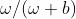
。这个结论现在通称为“大数定律”。在概率论上还有许多类似的结果也称作大数定律，为加以分别，特别称呼它为“伯努利大数定律”。
伯努利大数定律的重大意义，在于它揭示了因偶然性的作用而呈现的杂乱无章现象中的一种规律性，或简单地讲，在纷乱中找到了一种秩序。如果你每天在盒中抽一个球并记下其结果（再放回去），当抽到白球时记以 1 而抽到黑球时记以 0，则你得到的是一串杂乱的数字，例如，
1100010011110110000010110…
外表上看不出有何特征或规律性。如果有另一个人把你刚才所做的重做一遍，他也得出这样一串由 0 和 1 构成的数字，同样杂乱无章，但与你那一串并不相同。伯努利大数定律告诉我们，这表面的纷乱之下其实存在着一种规律性，即在这数串中，1 所占的比率愈来愈稳定到一个值上面，此值即盒中白球的比率。在开始的一段中，比率的变化可以是很大的，这个稳定性要到数串的长度足够“大”时才显示出来，这正是大数定律这个名称的由来。
跳出这个盒子模型，对大数定律的意义做一种更宽广的解释，可以不夸张地说，它反映了我们的世界的一个基本规律：在一个包含众多个体的大群体中，由于偶然性而产生的个体差异，着眼在一个个的个体上看，是杂乱无章、毫无规律、难于预测的；但由于大数定律的作用，整个群体却能呈现某种稳定的形态。例如一个封闭容器中的气体，它包含大量的分子，它们各自在每时每刻的位置、速度和方向上，都以一种偶然的方式在变化着，但容器中的气体仍能保有一个稳定的压力和温度。电流是由电子运动形成的，每个电子的行为杂乱而不可预测，但整体看呈现稳定的电流强度。在社会、经济领域中，群体中个体的状况千差万别，且变化不定，但一些反映群体状况的平均指标，在一定时期内能保持稳定，或呈现规律性的变化。究其根源，都是由于大数定律的作用。
上文谈到的压力、电流等的稳定性，是一种从经验上观察到的事实。另一方面，我们又曾指出，伯努利用数学的方法严格论证了大数定律。这二者的关系该如何去理解？
这个问题牵涉到数学理论与现实世界的关系，值得花一点儿篇幅来谈谈。先看看伯努利的数学证明。盒中一共有
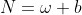
个球，白球 个，黑球 个。伯努利要求每次抽取一球时， 个球中每一个有同等可能被抽到，至于在现实中能否和如何做到这一点，数学证明完全不管它，只把这规定为一个必须做到的前提。把这 个球按 1 到 编号，则 次抽取的结果是如下形式的一个序列。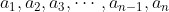
 可以是 1 到 中任何一个数，
可以是 1 到 中任何一个数，
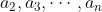
也一样，因此，如上形式的序列共有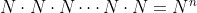
个。 次抽取的结果可以是这
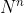
个序列中的任何一个，伯努利要求这 个结果有等可能性。这一点早在卡尔达诺 16 世纪的著作中已提到了。而且，在每次抽取时能保证等可能性的基础上，这一点看来也是不言而喻的。但我们仍得把它看成一个引申的假定，因为“等可能性”既然不是一个数学概念，那么用数学的形式推导去证明这一点是不可能的。最后，伯努利将上述 个结果的等可能性数学化解释为：其中任何一个序列在 次抽取中出现的概率都是 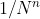
。这一解释把“等可能性”这种模糊的概念转化为一个明确的数学命题，在这个基础上，伯努利不难完成他的证明。从现实世界的角度看，大数定律是无法严格证明的。这是因为试验和观察，不论你进行得多长，只能是有限次。你把一个均匀方正的骰子掷了万亿次，记录出 1 点出现的频率，极其接近 1/6。但你怎么去证明，当你再继续掷万亿次时，仍能保持或缩小这个差距呢？你就是做了，我还可以再提出投掷百万亿次，总是解决不了。因此，说到底，从现实世界的角度看，大数定律是人类观察到的一个经验规律。伯努利大数定律（及其他形形色色的大数定律）的意义，在于对这样一个经验规律给了一个理论上的解释。在现实世界中，尽管很难甚至不可能达到伯努利数学证明中那种理想化的条件，但可以与之非常接近，因而伯努利证明的数学结论“基本上”能适用。可以说，大数定律这个经验规律，一般人都能知其然，而伯努利的研究成果告诉你所以然。
在历史上，不少的有心人也真拿这个定律作为试验验证的对象。丹麦概率论学者克里克在二战时曾被拘留，在拘留中他做过几个试验以打发日子。在一个试验中，他投掷一枚硬币达 10 000 次之多。硬币指定一面出现的概率被认为是 1/2。在投掷的初期，该面出现的频率摆动很大，后来逐渐平缓，在 0.5 的附近摆动愈来愈小，到 10 000 次终结时频率为 0.507，与 0.5 稍有差距。这可以有两种解释，一是由于偶然性的作用——虽则投掷次数之多使偶然性的作用大为减弱，但仍不能说没有作用。理论上的计算指出，当投掷 10 000 次时，频率仍可以有一个±0.01，甚至更大一点的摆动幅度。另一种解释是，该面出现的概率并非确切地等于 0.5。这是指硬币的两面有形状不一的花纹，它使硬币的两个面并不严格地处在对等状态。掷骰子提供了更多可能的组合。在 19 世纪末，英国生物学家兼统计学家威尔登将 12 个骰子投掷了 26 306 次——相当于把一个骰子投掷 315 672 次，每次记录其是否“投出 5 或 6 点”，最后记录得“投出 5 或 6 点”共 106 602 次，频率为 106 602/315 672 ≈ 0.3377。按骰子均匀性，“投出 5 或 6 点”的概率为 2/6 ≈ 0.3333，与频率 0.3377 比，有 0.0044 的差距。这差距稍显大一些，因为投掷的次数极多。按理论，若概率真为 1/3，当投到 315 672 这么多次时，频率与概率的差距不可能超过 0.0013。这说明威尔登所用骰子很可能并非全都均匀。
18 世纪一位叫布丰的法国科学家做过这样一个计算。在平面上画一组等距离  的平行线，如图 1.1 所示。随机地向这平面上抛一根长为
的平行线，如图 1.1 所示。随机地向这平面上抛一根长为  的针， 比 小，针可以与该组平行线之一相交，也可以不与任何直线相交，图中画出了这两种情况。理论上的计算表明，前一种情况发生的概率是
的针， 比 小，针可以与该组平行线之一相交，也可以不与任何直线相交，图中画出了这两种情况。理论上的计算表明，前一种情况发生的概率是
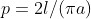
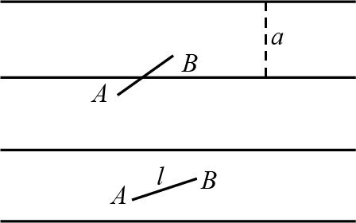
图 1.1 布丰试验
这里π≈ 3.141 592 6 是圆周率。后来不断有人对此进行实地试验，看得出的频率与上述公式的 相比差距如何。印度统计学家 C.R. 劳的著作《统计与真理》介绍了好几个这种结果，其中一位意大利数学家在 1901 年报道了他的结果：他投掷 3408 次，算得频率与之差距在小数点后的第 6 位。这么小的差距多少带有偶然性。在劳介绍的其余一些实例中，有投掷次数更多但接近程度不如者，这不仅不奇怪，且是合理的现象，原因还是在于偶然性的作用。